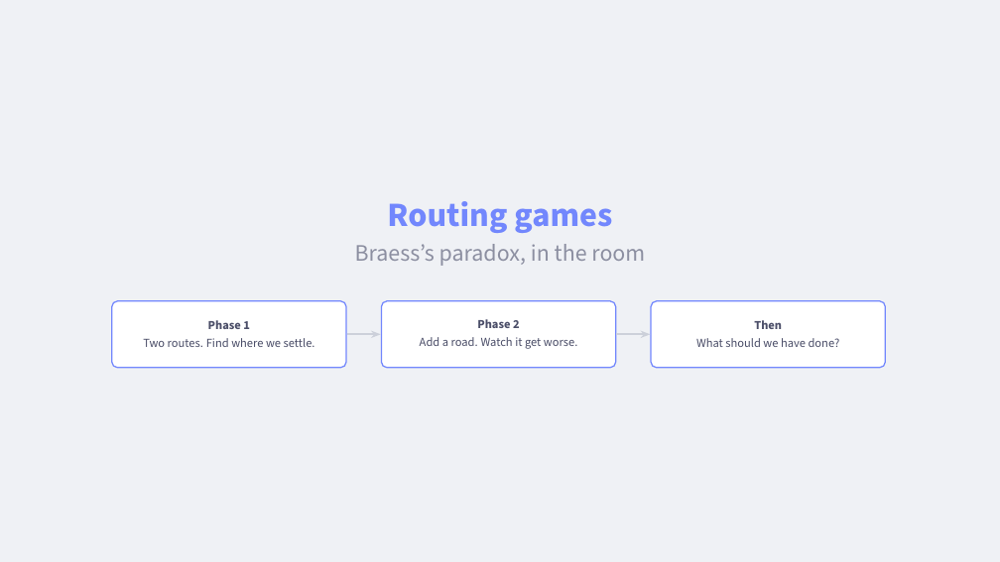
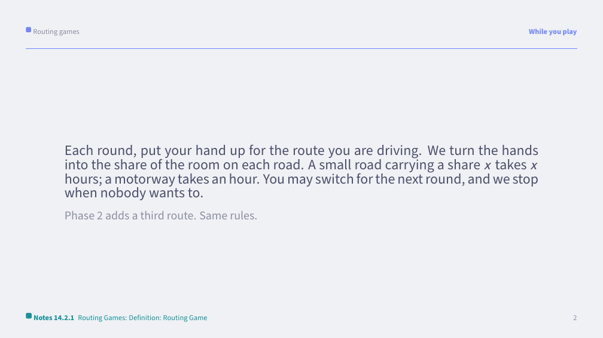
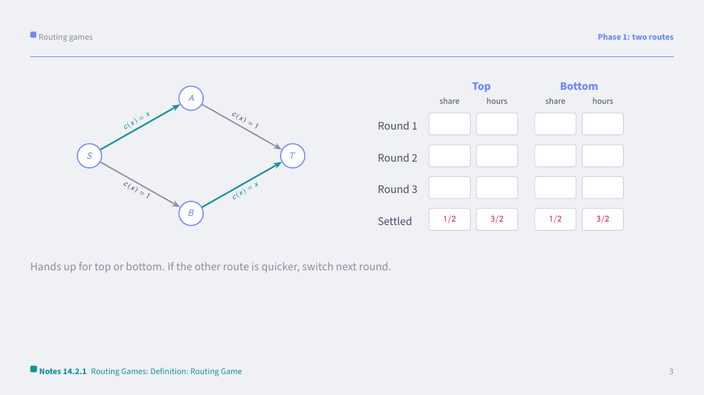
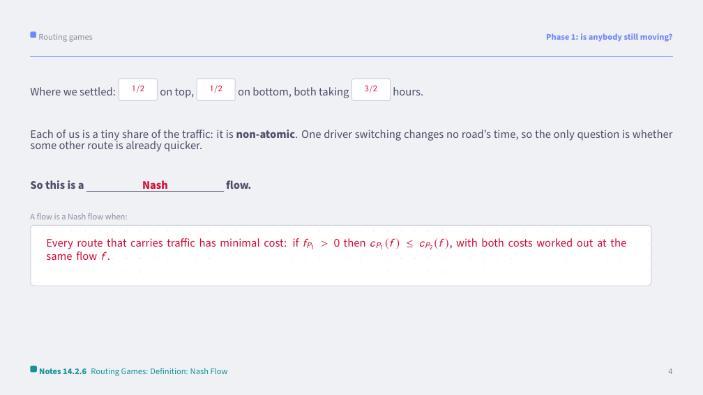
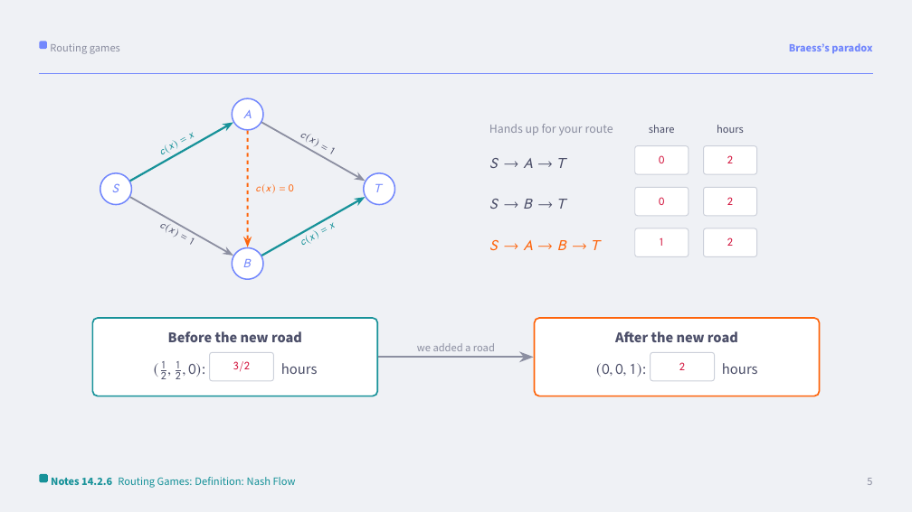
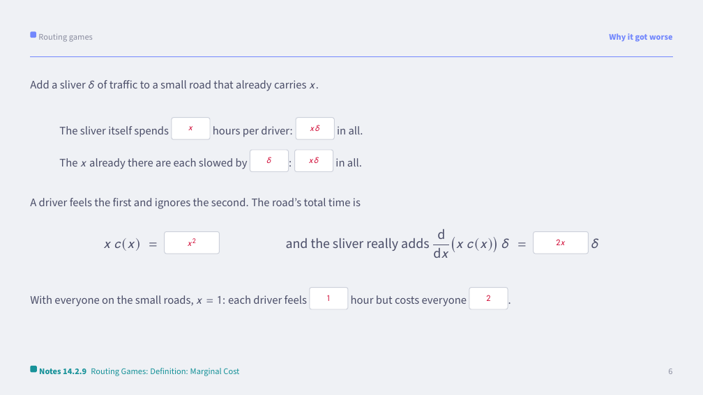
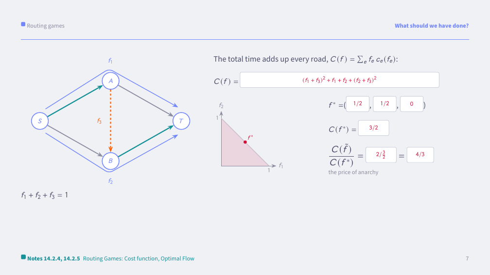
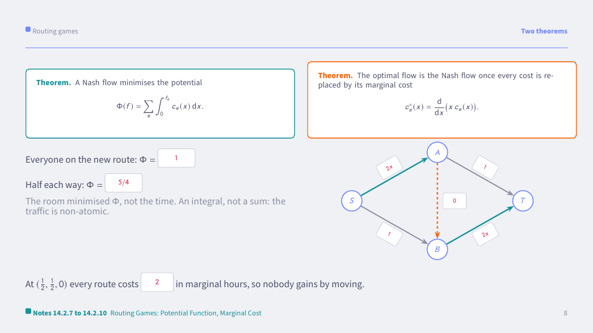
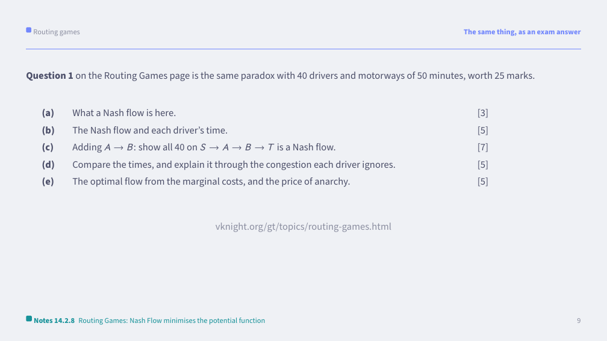
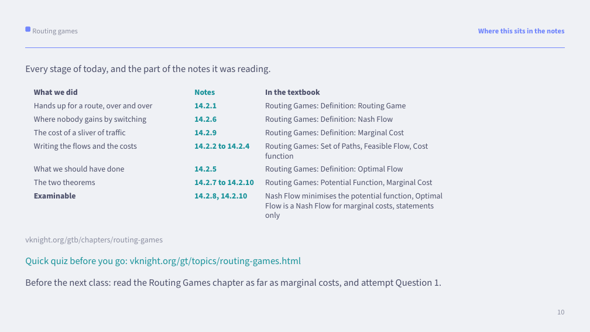

Goal. Let students reach a Nash flow by selfish routing, compare it to the optimal flow, and experience Braess's paradox: adding a road can make everyone worse off.
The deck. There is a write-on deck at /decks/routing-games/main.pdf: one page per step, with the network already drawn and every number the class produces left blank. Project it and annotate it live on a tablet, so no class time goes on drawing the network and the finished pages can be shared afterwards.
Every slide of the deck names the numbered section of the notes it is reading, and the last slide gathers them into one table, marks what is examinable and sets the reading for the next class. A "While you play" slide carries the rules: leave it up while the room plays.
The network. Drivers travel from Start (\(S\)) to End (\(T\)). The deck uses the normalised network from the chapter, with the traffic measured as the share of the room, so a room of any size gives the same numbers:
Phase 1 (no shortcut).
The split settles at a half each way, each route taking \(\frac12 + 1 = \frac32\) hours. This is the Nash flow, and here it is also the optimal flow.
Phase 2 (add a shortcut).
Question 1 uses different numbers. The exam question on the topic page is the same paradox with 40 drivers and motorways of 50 minutes. Its optimal flow uses the new road a little (15, 15 and 10) and its price of anarchy is \(64/55\), whereas in the normalised network the optimal flow ignores the new road and the price of anarchy is \(4/3\). That contrast is worth pointing out when the class attempts the question.
Discuss the Routing Games chapter.
Discussion Point: After the definitions of flow and cost, ask students to write down the flow and the costs in our network.
Discussion Point: After the definitions of Nash flow and optimal flow, ask which was which in each phase, and why they differed once the shortcut was added.
Discussion Point: After the potential function and marginal cost results, ask students how each driver ignoring the congestion they impose on others explains Braess's paradox.
Close on the last slide. It names what the class was reading and sets the reading for next time. Then run the quick quiz from the Routing Games topic page: five questions on the screen, answered by a show of hands. It takes five minutes and tells us both what landed.
The counts in Phase 1 and Phase 2 come from the room. These are the rest.
Phase 1. The room settles at a half each way, so each route takes \(\frac12 + 1 = \frac32\) hours. The slide then names the traffic as non-atomic: each driver is a negligible share of it, one switch changes no road's time, and a Nash flow is one where every route that carries traffic has minimal cost. Both routes take \(\frac32\), so this is a Nash flow. The chapter's definitions, the integral in the potential and the derivative in the marginal cost all rely on this, so it is worth saying out loud.
Braess's paradox. The room ends up with the flow \((0, 0, 1)\): every route then costs \(2\) hours, so nobody can gain by moving and this is a Nash flow. Before the new road, \((\frac12, \frac12, 0)\) cost \(\frac32\) hours each.
Why it got worse. Add a sliver \(\delta\) of traffic to a road that already carries \(x\). The sliver spends \(x\) hours per driver, \(x\delta\) in all, and slows each of those already there by \(\delta\), another \(x\delta\). A driver feels the first and ignores the second. The road's total time is \(x \, c(x) = x^{2}\), so the sliver really adds \(\frac{\mathrm{d}}{\mathrm{d}x}(x \, c(x))\,\delta = 2x\delta\). With everyone on the small roads, \(x = 1\): each driver feels 1 hour but costs 2.
What we should have done. Write \(f_1\), \(f_2\) and \(f_3\) for the shares on \(S \to A \to T\), \(S \to B \to T\) and \(S \to A \to B \to T\), with \(f_1 + f_2 + f_3 = 1\). Adding up every road,
The feasible flows are the triangle \(f_1, f_2 \geq 0\), \(f_1 + f_2 \leq 1\). By symmetry take \(f_1 = f_2 = a\) and \(f_3 = 1 - 2a\), so \(C = 2(1 - a)^2 + 2a\) and \(\mathrm{d}C/\mathrm{d}a = 2 - 4(1 - a) = 0\) gives \(a = \frac12\). The optimal flow is \(f^{*} = (\frac12, \frac12, 0)\), on the edge of the triangle, with \(C(f^{*}) = \frac32\). The Nash flow costs \(C(\tilde f) = 2\), so the price of anarchy is \(2 / \frac32 = \frac43\).
The two theorems. The potential \(\Phi(f) = \sum_e \int_0^{f_e} c_e(x)\, \mathrm{d}x\) is \(1\) for the room's flow, everyone on the new route, against \(\frac54\) for half each way: the Nash flow minimises \(\Phi\), not the time. The potential is an integral rather than a sum because the traffic is non-atomic. The marginal costs are \(2x\) on a small road, \(1\) on a motorway and \(0\) on the new road. At \((\frac12, \frac12, 0)\) every route costs 2 marginal hours, so this is the Nash flow for the marginal costs and, by the second theorem, the optimal flow.
The activity above is written up as a marked exam question: Question 1 (the in-class activity) on the Routing Games page, with a full worked solution. Closing the loop here is the step that helps students who find exams hard: work through that question together, or set it as the immediate follow-up, so they see the game they just played turned into a full-mark answer.
Every page of the deck with its boxes completed, built from the same source as the blank deck we project. Click a page to see it full size.










General email templates to send before and after this class. Fill in the bracketed placeholders before sending.
Hi all,
A reminder that our next Game Theory class covers Routing Games.
All of the course materials, including the relevant chapter, are available
at https://vknight.org/gt/. It is worth skimming the chapter beforehand.
See you in class,
Vince
Dear all,
Thanks for your work in today's class on Routing Games.
A recording is available here [RECORDING LINK] and on Learning Central.
All class resources are available at https://vknight.org/gt/.
Thanks,
Vince